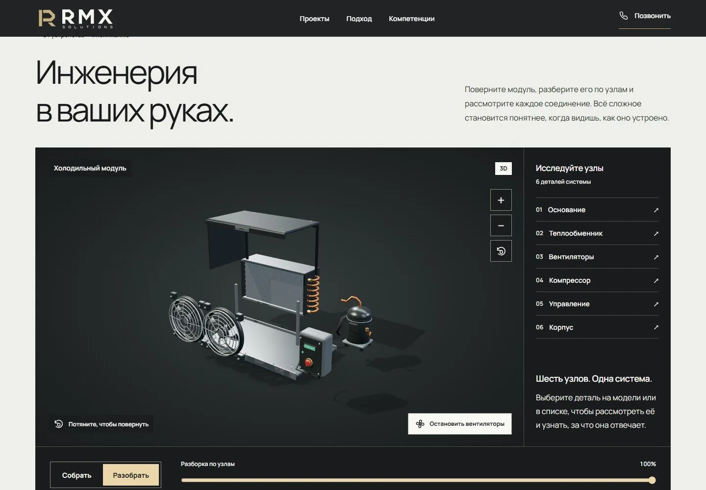
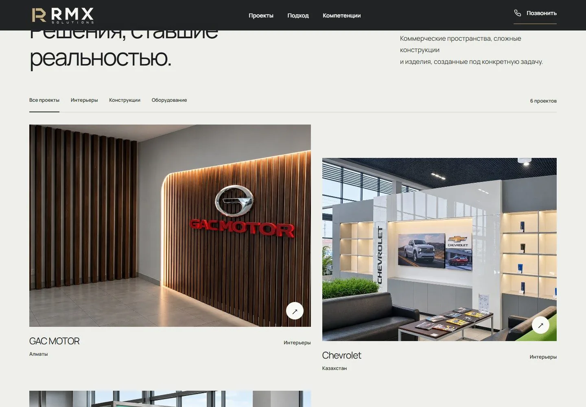

Корпоративный сайт
RMX Solutions
Дизайн, инженерия и производство — с 3D-моделью в браузере.

Первый экран. Фото объекта заказчика с ретушью
О проекте
Лендинг инженерно-дизайнерской компании из Алматы: коммерческие интерьеры, конструкции и холодильное оборудование. В блоке «Инженерия» холодильный модуль из шести узлов можно повернуть, разобрать и включить вентиляторы. Логотип, палитра и вёрстка созданы с нуля.
Что внутри
- WebGL-модель модуля: сборка и разборка по узлам
- Кейсы с фильтрами и галереей
- Семь направлений компетенций
- Новый логотип и графитово-латунная палитра
Экраны проекта



